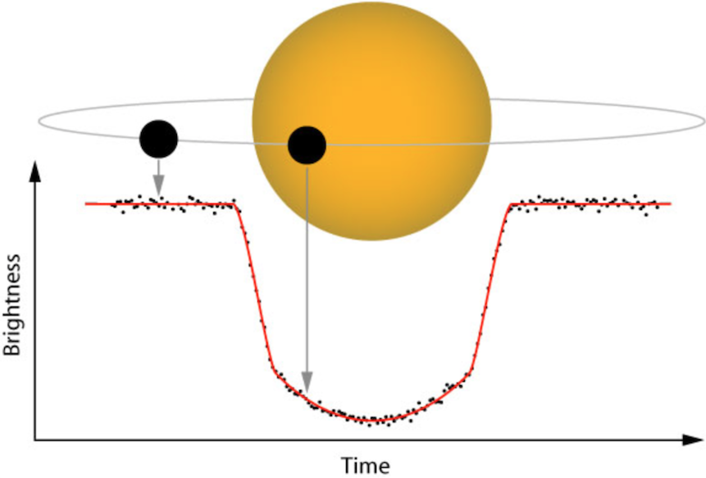
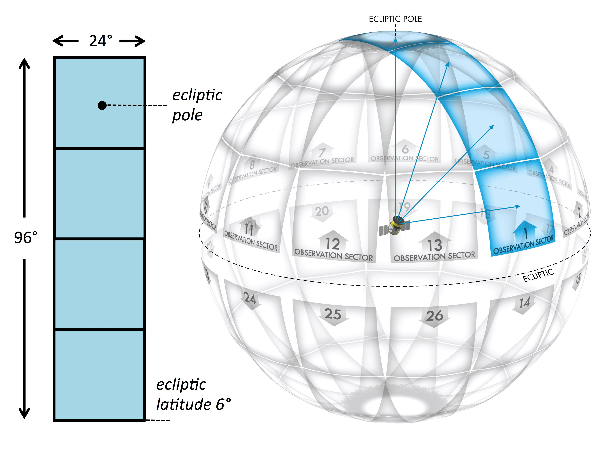
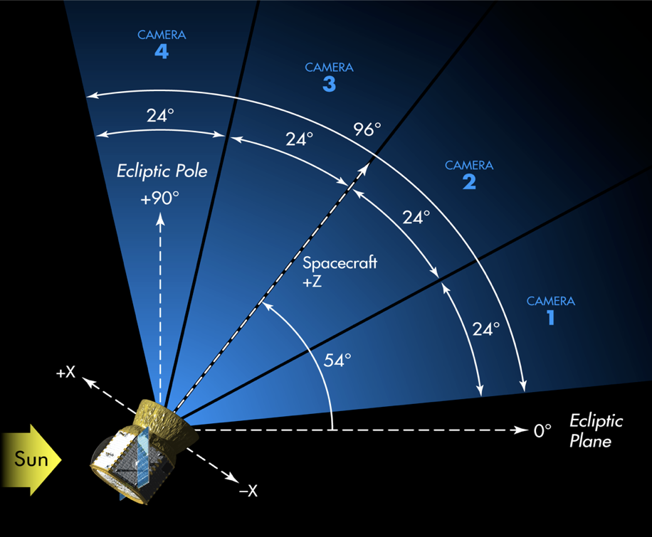
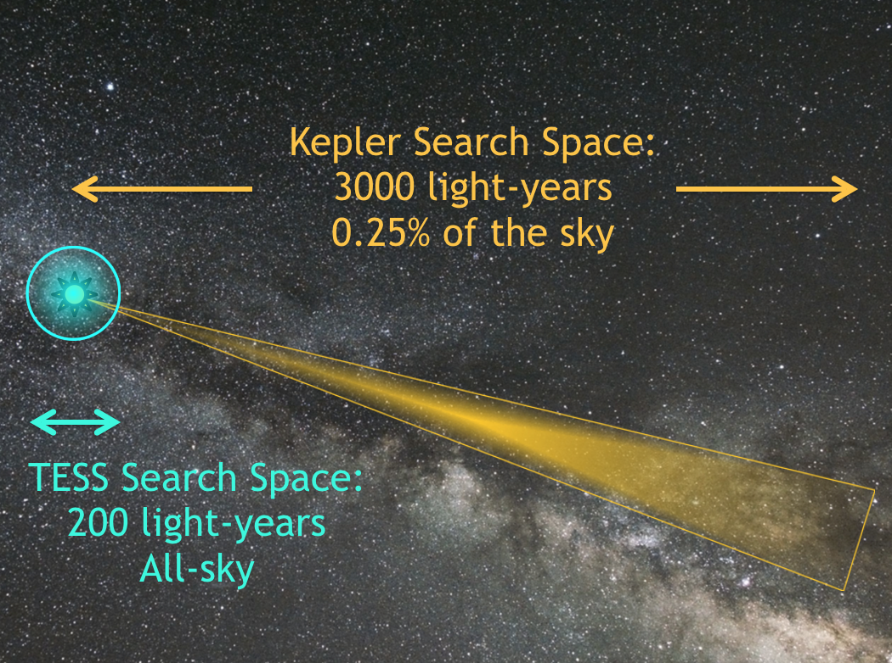
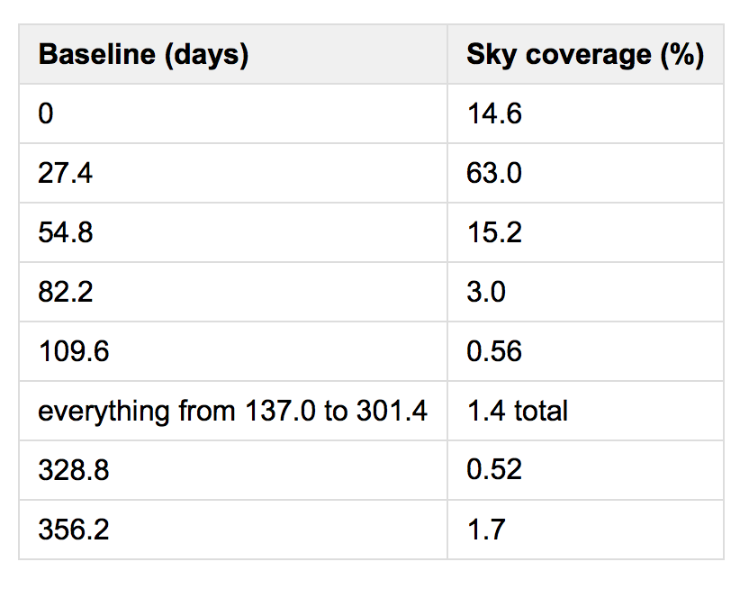
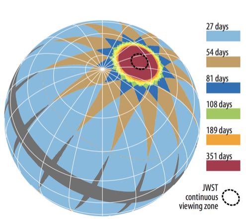
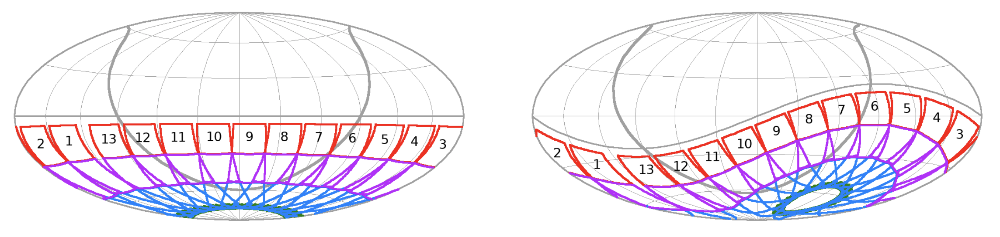
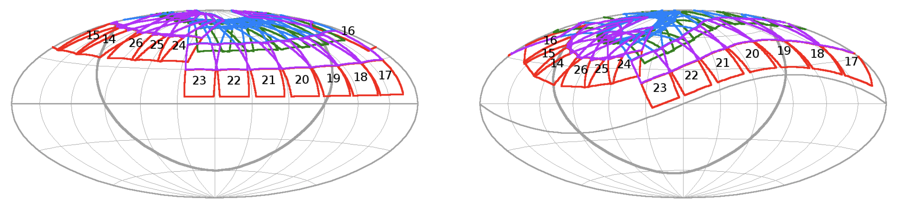
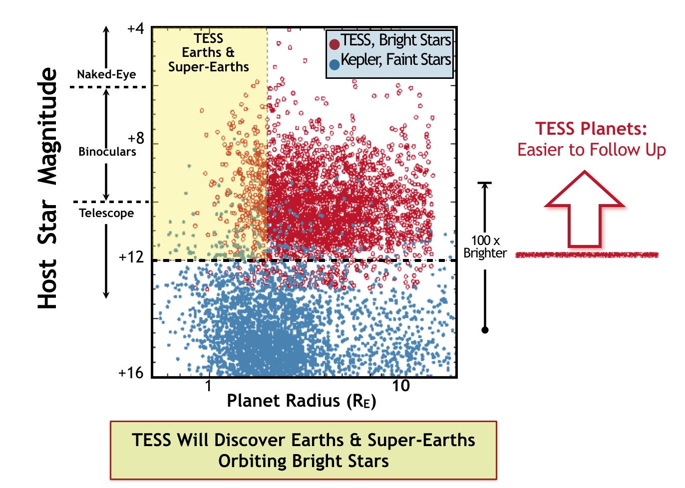

The TESS primary mission ran from July 25th 2018 until July 4th 2020 (note that ground-based follow up for the primary mission continued into 2021) . Within this two year mission TESS searched for planets outside of our solar system with a primary goal of finding nearby planets that are amenable to characterization with ground-based follow-up surveys. Specifically, the primary science requirements of the TESS mission were as follows:
-
Search over 200,000 stars to discover planets with periods <10 days and radii <2.5 Earth radii orbiting the brightest stars in the solar neighborhood and discover planets with radii at least 2.5 Earth radii distributed across the celestial sphere.
-
Search for transiting planets with periods up to 120 days among the ~10,000 stars in regions surrounding the ecliptic poles.
-
Determine the masses for at least 50 planets with radii <4 Earth radii.
The TESS primary mission surveyed stars with spectral types ranging from F5 to M5 to searching for transiting exoplanets. Additional follow-up with ground- and space-based missions, including NASA's James Webb Space Telescope, have and will allow astronomers to study the atmospheres of many of these planets. The TESS legacy is catalog of the nearest and brightest main-sequence stars hosting transiting exoplanets, see our data access page for a list of TESS data catalogs.
In addition to its search for exoplanets, the TESS primary mission allowed scientists from the wider community to request targets for astrophysics research on approximately 10,000 additional objects through each cycle of its Guest Investigator program.
How TESS searches for planets
The TESS mission searches for planets via the transit method, the same method used by the Kepler Mission. The transit method of detecting exoplanets involves monitoring the brightness of many stars to look for periodic dips that could reveal planets crossing in front of the stars, blocking a fraction of their light, as viewed from the spacecraft. Transit photometry allows a very precise measure of a planet's orbital period. The depth of the folded transit light curve can reveal the planet's size compared to the star's size, and the width can reveal the duration of the transit.

The transit method of detecting exoplanets involves monitoring the brightness of stars to identify periodic drops caused by planets crossing in front and blocking a fraction of their light as viewed by the spacecraft. Image credit: NASA
Sky coverage
TESS is equipped with four CCD cameras that have adjacent field-of-views to produce a 4 x 1 array, or 'observing sector', yielding a combined field-of-view of 96x 24 degrees, as illustrated below.


Since 2018 TESS has observed approximately 80% of the sky (an area 400 times larger than that monitored by Kepler), and as such has observe many more nearby, bright stars compared to the Kepler Mission.

The TESS search space compared to that of the Kepler Mission. Image Credit: Zach Berta-Thompson
The fraction of sky coverage for the different time baselines that TESS had over the 2-year prime mission is listed below. Note this does not take into account the shift in pointing in Sectors 14, 15, and 16 that are described below.

Observing strategy
Within the primary mission TESS imaged 26 individual sectors, 13 in the southern hemisphere and 13 in the northern hemisphere. Each hemisphere was observed for 1 year each, beginning in the south in July 2018. Each sector was observed for two orbits (27.4 days total), and once complete, TESS re-orientated to the next sector moving eastward until the hemisphere was tiled by 13 sectors.
Within each 96 x 24 degree sector TESS observed 15,000 target stars on a 2 minute cadence and collected full frame images at 30 minute cadence. The sectors have ecliptic latitudes from 6 degrees to the ecliptic pole with increasing overlap at higher latitudes. There was 350 days of continuous coverage in the Continuous Viewing Zone (CVZ) at the ecliptic poles, which corresponds to the region accessible to NASA's upcoming James Webb Space Telescope.
A video illustrating the TESS survey strategy, along with the pathway to the spacecraft orbit, can be seen here.

Schematic showing observing baselines on the celestial sphere including sector overlap regions. The dashed black circle enclosing the Ecliptic pole shows the region where the JWST has continuous viewing capabilities. The pointings for Sectors 14--16 were shifted toward the North ecliptic pole by 31 degrees to minimize impacts of scattered light from the Earth and Moon. See below for additional information.
Pointing shifts
In the second year of the primary mission TESS observed the northern ecliptic hemisphere. The cameras were oriented along a line of ecliptic longitude (as they were in Year 1), with that longitude determined by the anti-solar longitude at the mid-point of the sector. For most of Year 2, the camera array was oriented such that Camera 4 was centered on the northern ecliptic pole: in this orientation, the southernmost edge of Camera 1 was ~6° from the ecliptic.
However, for Sectors 14 and 15, scattered light from the Earth and Moon was a significant problem in Cameras 1 and 2, reducing the available observing time for exoplanet transits by as much as 75% in those cameras. To reduce the impact of scattered light, the field-of-view of the camera array was shifted north by 31° with respect to its nominal pointing in Sectors 14 and 15.
When the cameras were shifted north, the northern ecliptic pole was located 7° from the center of Camera 3, and the southernmost edge of Camera 1 was at an ecliptic latitude of ~37°. In addition, with this shift, the fields-of-view of Cameras 3 and 4 observed “on the other side of the pole”, thereby providing additional observations of parts of the sky that would otherwise only be observed in Sectors 20-22.
Scattered light from the Earth and Moon was also expected to be a problem in Sectors 25 and 26 and, to a lesser extent, in Sectors 16 and 24. The scattered light performance in Sectors 14 and 15 was reviewed, and it was decided that Sector 16 would also have its pointing shifted north. In addition, it was decided that Sectors 24, 25, and 26 would benefit from having their pointings shifted north as well.
Additional details on TESS observations can be found at the MIT TESS website. The Web TESS Viewing Tool (WTV) has been updated to reflect the change in pointing for Sectors 14, 15, and 16 as well as Sectors 24, 25, and 26.
The sky coverage maps for Sectors 1-26 are given below in the ecliptic and celestial coordinate systems and show the shifted fields for Sectors 14, 15, 16 and 24, 25, 26.
Sectors 14, 15, and 16 shifted north:  
Types of stars monitored
The stars TESS has studies are typically 30 to 100 times brighter than those that the Kepler mission surveyed, this enabled far easier follow-up observations with both ground-based and space-based telescopes.

Image Credit: MIT
Period sensitivity
The orbital periods that TESS is sensitive to depends on the fraction of overlap among the sectors, which depends on the ecliptic latitude. Closer to the ecliptic, a field will have at most 27 days of coverage, meaning planet orbital periods will need to be shorter than this duration. Detecting 3 transits is ideal to constrain the orbit, but many 2-transit planet candidates will be found, necessitating additional follow-up to measure additional transits. At higher latitudes, the overlap of sectors will enable 351 days of coverage per year.